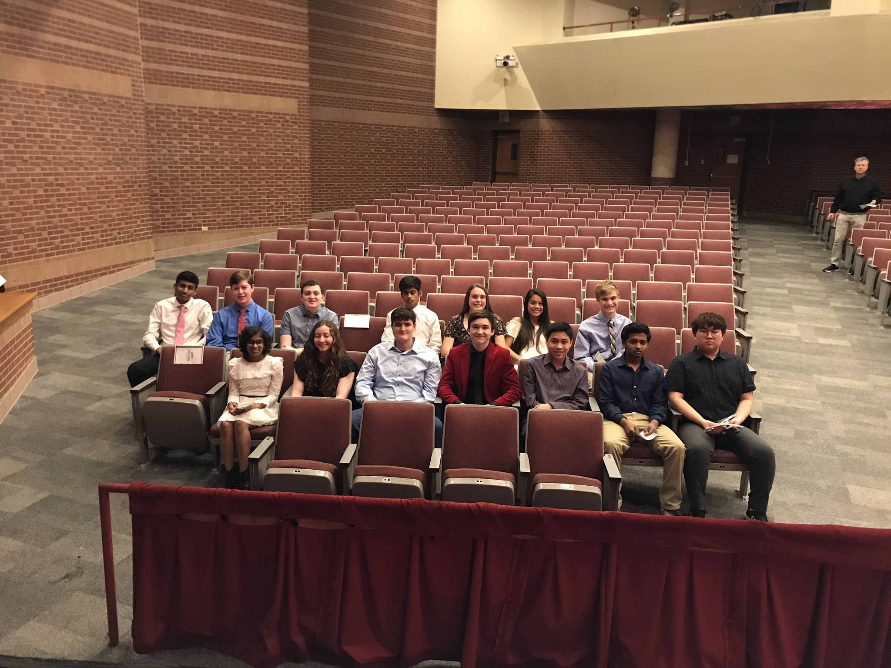
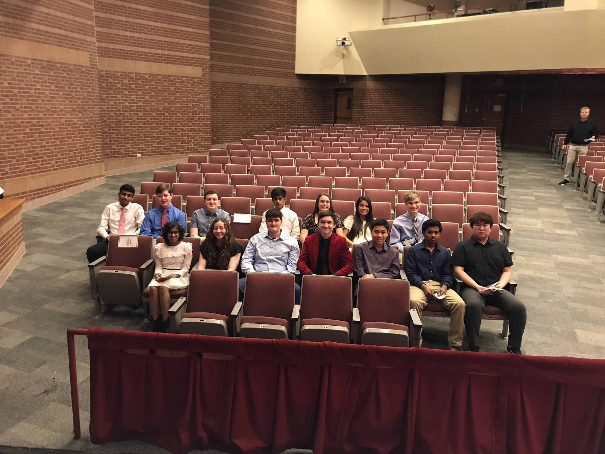

Shortly after my internship at the Perot Museum, I took a volunteering program to familiarize myself with a work environment. I worked there for 80 hours during my summer break. Our task during volunteering was to help the guests find their way around the museum and educate them on the exhibits in the museum.
I volunteered at the Food Bank of Oklahoma all through my freshman year. The food bank would have programs that would have volunteers package food which would be handed out to the homeless and less fortunate. I spent around 50 hours packaging food at the Food Bank and I enjoyed very moment of it.
I was a part of the National Honors Society for my last 2 years of high school. This program selects the students that were responsible, honest, smart, and hard-working. NHS members were to volunteer a certain amount at school and a certain amount outside of school. There were many programs that needed volunteer help like setting up the SAT testing rooms or helping set up track events. I completed my service to earn a NHS completion award.
I joined Project Downtown at the very beginning of high school. Members of this club would meet up with students from other schools to make and donate food in downtown Dallas. I attended 5 of these events throughout high school. Some of the people we served would tell us their life stories and share their wisdom with us younger kids. I learned many lessons during my participation in this club. This experience made me realize how fortunate I am to live the life that I am living.
 
